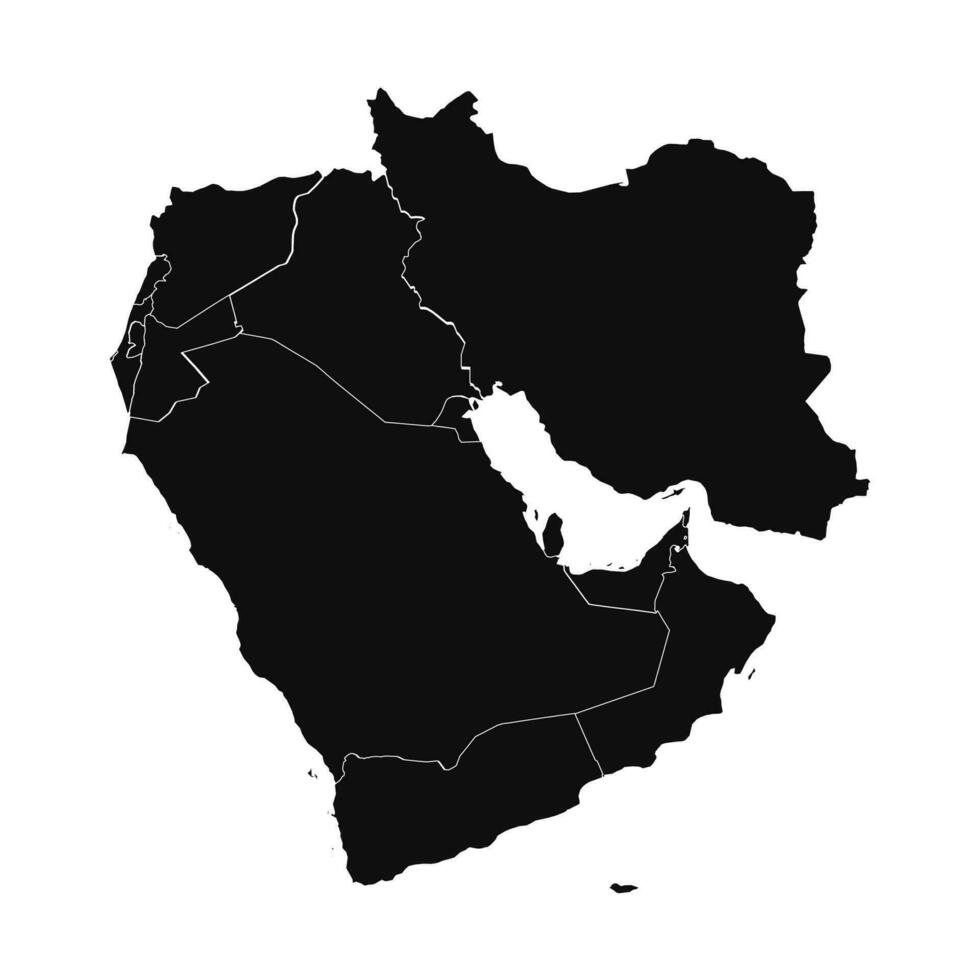
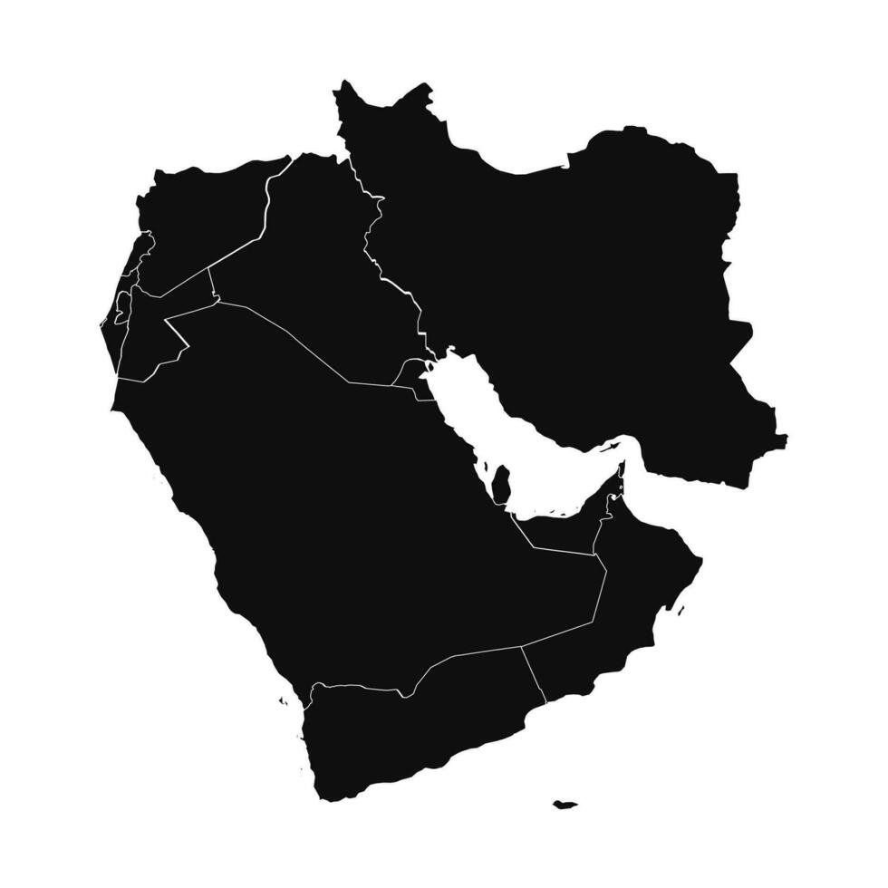
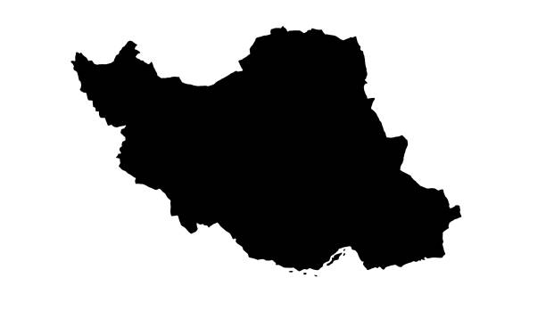
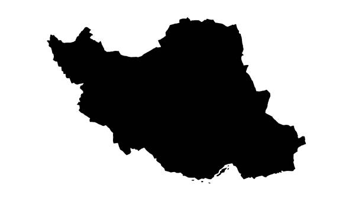
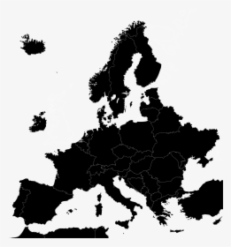
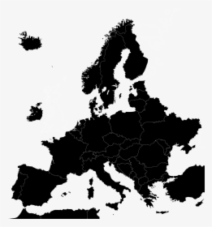

The kiwi, originally known as the Chinese gooseberry, originated in China before gaining popularity worldwide.

Avocados, native to South-Central Mexico, were a staple in the diet of the region's ancient civilizations and have been cultivated since pre-Columbian times.

Avocados, native to South-Central Mexico, were a staple in the diet of the region's ancient civilizations and have been cultivated since pre-Columbian times.
Green apples, like all apples, originated in Central Asia, particularly in the areas around Kazakhstan. The green varieties, such as Granny Smith, are known for their crisp texture and tart flavor. These apples were selectively bred over centuries for these distinctive characteristics and have become a global staple in both eating and cooking.
 

Green grapes, part of the diverse family of grapes originally from the Near East (regions like present-day Turkey, Armenia, Azerbaijan, Georgia, Iran), have been cultivated for thousands of years. These grapes, varying in sweetness and size, are used both for eating fresh and for making wine, raisins, and vinegar. The cultivation and trading of grapes played a significant role in the ancient civilizations of the Mediterranean and Middle East.

Honeydews have roots in West Africa and the Middle East, known for their sweet, succulent flesh.


Guavas, native to Central America and Mexico, were an important food source for the indigenous populations before being spread globally.

Pears, cultivated for their sweet and juicy nature, originated in Western China, with evidence suggesting parallel cultivation in Europe.


Developed from wild cabbage in the Eastern Mediterranean and Italy, broccoli was cultivated in Italy since the time of the Roman Empire.
 

Originating in Persia (modern Iran), spinach was introduced to India and ancient China, where it was known as the "Persian vegetable."

Kale has been cultivated since ancient times in the Eastern Mediterranean and Asia Minor, known for its hardiness and nutritional value.

Lettuce was first cultivated in ancient Egypt for the production of oil from its seeds, eventually leading to the breeding of the leafy vegetable we know today.


Cucumbers originated in India over 3,000 years ago and were prized for their refreshing and hydrating qualities in hot climates.

Zucchini, a type of summer squash, was originally cultivated in Central America and Mexico and brought to Europe by the Spanish.
Peas have been cultivated for thousands of years in the Near East and Mediterranean Basin and were a staple in the medieval European diet.
Asparagus has been used as a vegetable and medicine, owing to its delicate flavor and diuretic properties, since ancient times in the Eastern Mediterranean and Western Asia.


Brussels sprouts, developed from a cabbage ancestor, were cultivated in large quantities in Belgium as early as the 13th century.

Scallions have been cultivated and used in Central Asia and the Middle East for centuries, appreciated for their mild onion flavor.

Bok choy, a type of Chinese cabbage, has been cultivated in China for thousands of years and is a staple in Asian cuisine.


Swiss chard, related to beets, has been grown in the Mediterranean region for centuries, known for its hearty leaves and colorful stems.

Arugula, an aromatic salad green, has been grown in the Mediterranean region since Roman times.
Endive, native to the Mediterranean region, has been appreciated since ancient times for its slightly bitter leaves.

Romaine lettuce, originating from the Mediterranean region, has been a popular leafy vegetable since ancient Roman times.
Mustard Greens, originating from the Himalayan region of India, have been cultivated for their spicy, flavorful leaves for centuries.

Collard Greens, part of the cabbage family, have been cultivated in the Eastern Mediterranean since ancient times.

Native to Central and South America, bell peppers were one of the many New World foods brought back to Europe by explorers in the 15th and 16th centuries.

The artichoke is native to the Mediterranean region and has been cultivated since ancient times for its edible flower buds.
Okra likely originated in West Africa, where it has been cultivated for its edible green pods for centuries.
 

Cabbage, a member of the Brassica family, has been cultivated in Europe for thousands of years for its dense-leaved heads.

Leeks, native to the Middle East and Mediterranean, have been a staple in the diets of these regions since ancient times.
Celery has been cultivated in the Mediterranean region since ancient times for its aromatic leaves and seeds.

Chayote, a type of squash, is native to Central America and has been part of the indigenous diet since pre-Columbian times.

Watercress, a leafy green, has been consumed since ancient times in Europe and Asia for its peppery flavor.

Soursop, native to the Caribbean and Central America, is known for its distinct flavor and has been used traditionally for medicinal purposes.